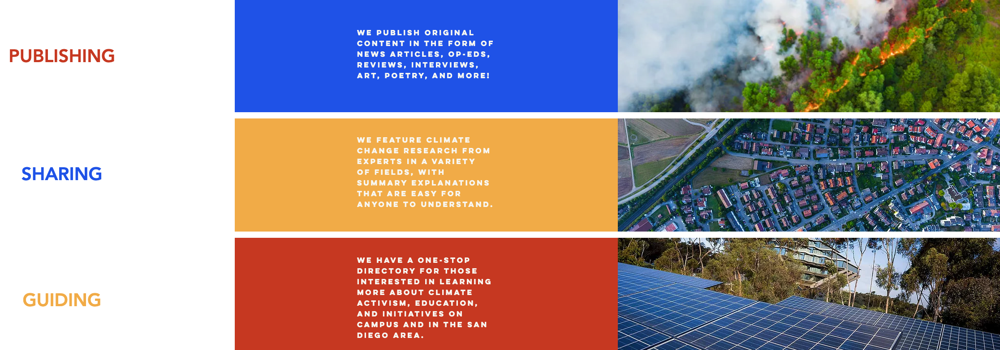

Stay Informed
Since government involvement is essentially a requirement to fight the climate crisis, we should support progressive politicians and policies. Here are some ways you can learn about them:
HasanAbi
The largest political commentator on twitch, Hasan is a prominent figure in the progressive movement. He has entertaining yet in-depth conversations about relevant topics. Check out his daily streams at twitch.tv/hasanabi or YouTube channel (which is mostly content from his streams) at youtube.com/hasanabi.
UCSD Climate Change Review
It's a student-run publication and research group. Their articles -- which cover areas such as climate science, politics, equity & environmental justice, and many more -- are a great resource to learn from. Check it out here.
The David Pakman Show
If you get bored of Hasan, David's YouTube channel is another of the many sources for progressive political discussion.